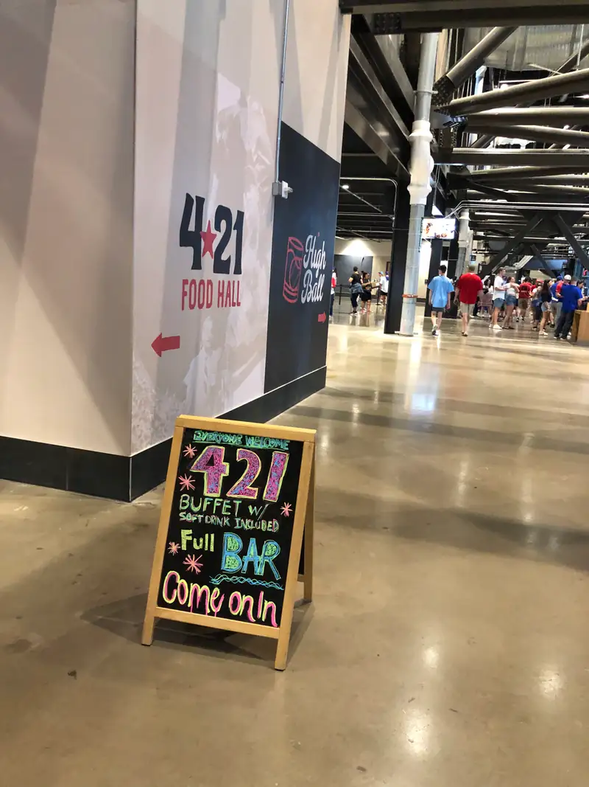
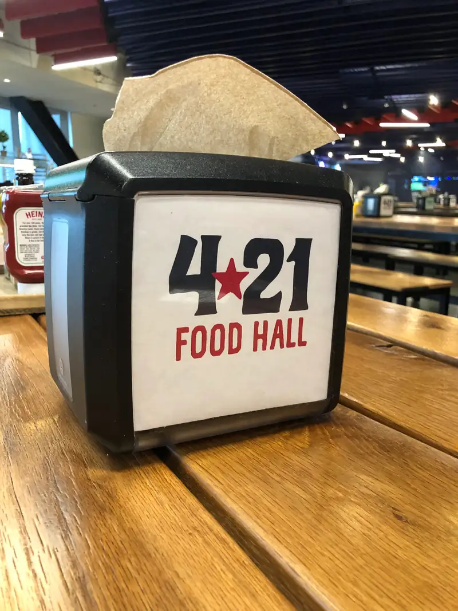
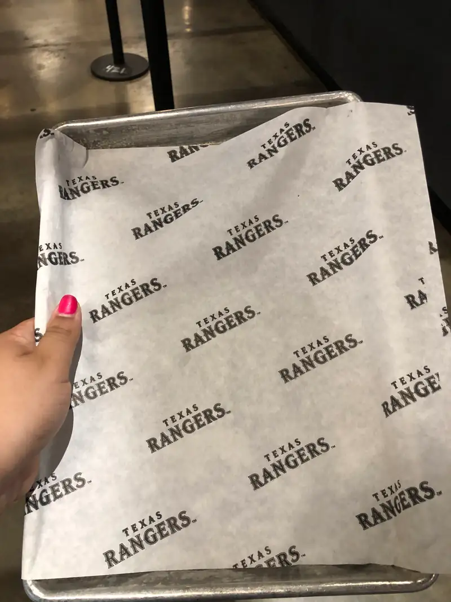
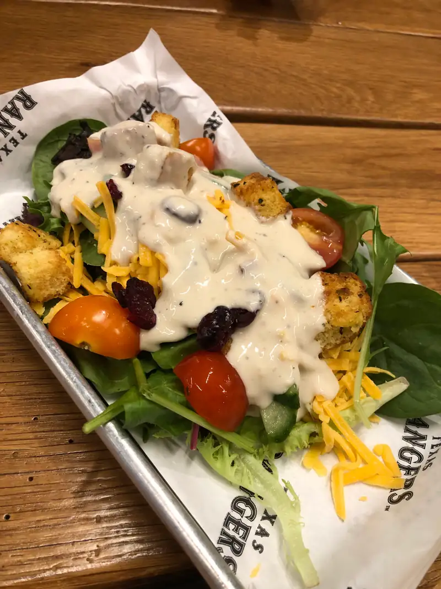
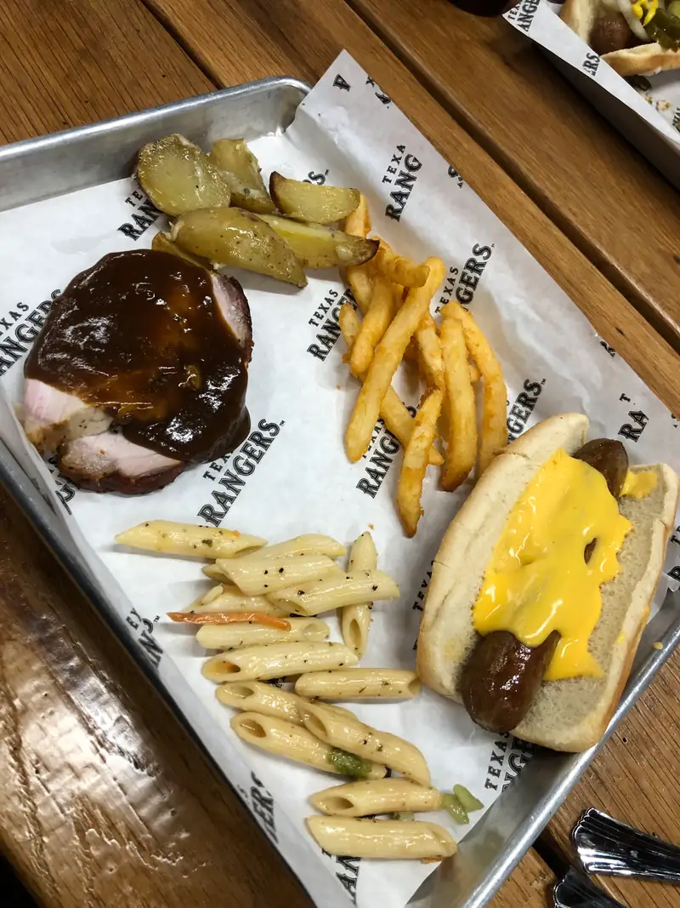
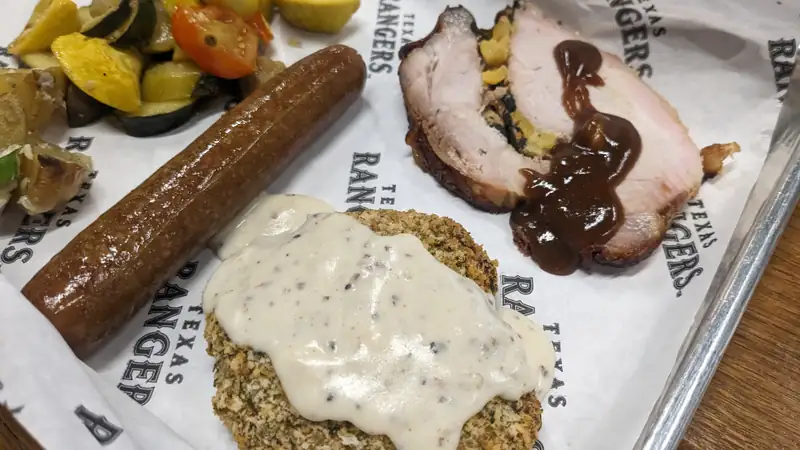
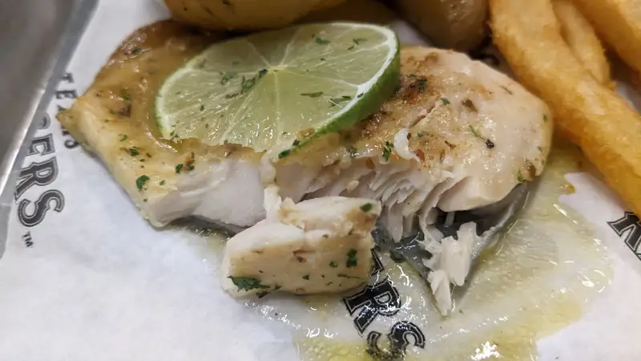
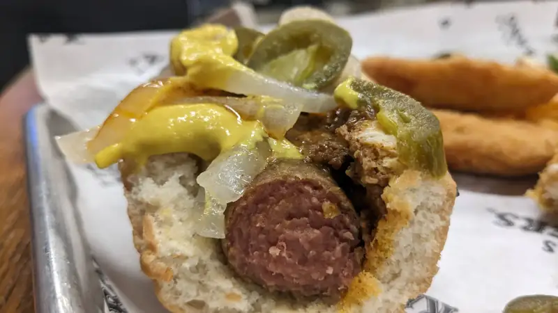
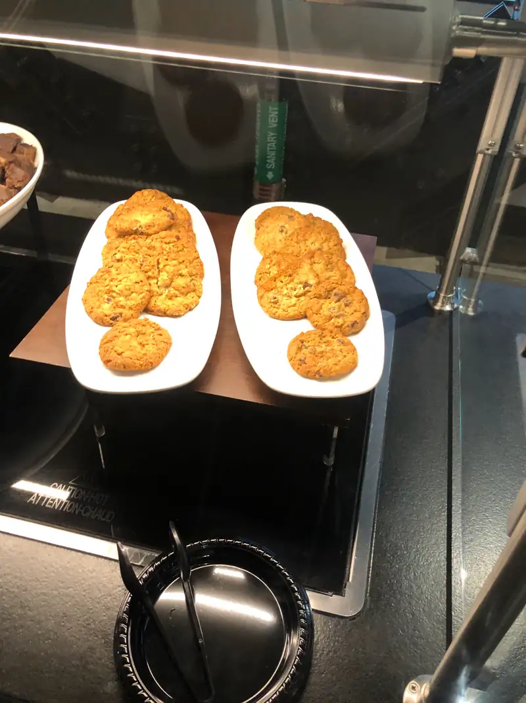
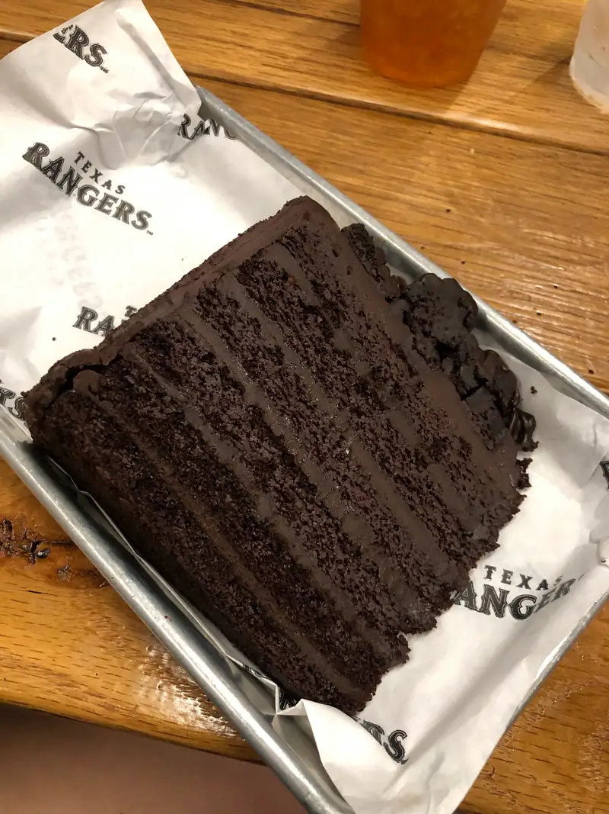

421 Food Hall
Segun lo que lei en algunas paginas acerca del lugar, se llama asi porque el primer juego que jugaron los Rangers fue un 21 de Abril. Sin saber mucho mucho acerca del lugar, pues nos aventuramos a ir. Lo mas lamentable del lugar es que no tiene vista al campo asi que aunque estas en el estadio, realmente es como estar en algún bar viendo el juego en una tele.
La entrada
 {kind=link}
Los servilleteros
 {kind=link}
Las charolas con su papel encerado con el logo de los Rangers, claro
 {kind=link}
Claro que uno debe empezar con una ensalada! .... naaah, esta fue ya que habíamos explorado todas las estaciones y pues... p'a llenar
 {kind=link}
En realidad mas o menos asi empezó la comedera, con papas, hotdog, lomo y pasta
 {kind=link}
Y ya, siendo el keto-friendly que es uno, con un hotdog "sin pan" ... y la mayor cantidad de proteína posible: Pollo empanizado con salsa blanca, una salchicha y lomo de puerco envuelto en tocino y relleno de frutas. Ya en lo no-keto-friendly, tenían unas papas con queso azul po-ca ma-dre que hasta me servi 2 veces. Y si, con verduras asadas, tambien 2 veces, p'a nivelar.
 {kind=link}
Aunque no lo tenian afuera cuando llegamos, para la segunda (o tal vez tercera) vuelta sacaron este pescado (trucha, supuestamente)
 {kind=link}
Y bueno, un hotdog como minimo para que no quede duda de haber ido al estadio!
 {kind=link}
De postre, pues.. hay varios pasteles y galletas, pero el seleccionado fue este
 {kind=link}
Pastel(ote) de chocolate.
 {kind=link}
Y que pues? vale la pena ir hasta el estadio, pagar $35 por persona para poder atascarte de comida?... hm... tal vez... si no te importa mucho el partido en si, (porque nom'as lo vas a poder ver en la tele) tal vez te quieras sacrificar... no se.. si llegas temprano puede que lo alcances a desquitar y luego ya te vas a tus asientos para ver el juego.